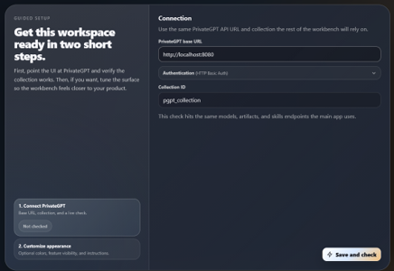
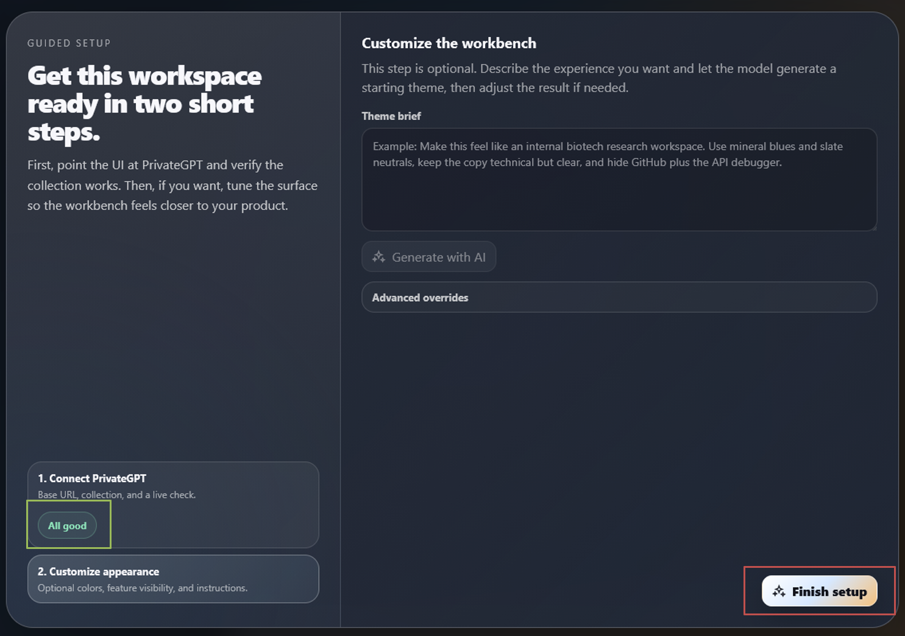
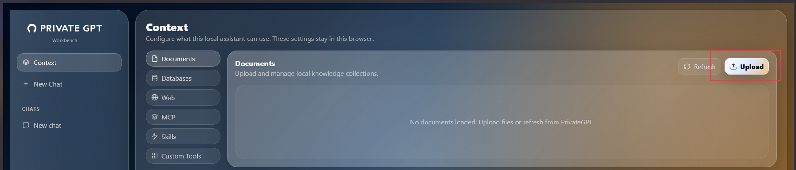
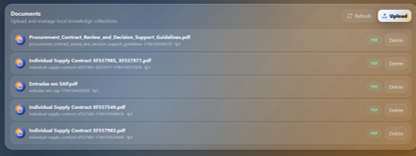
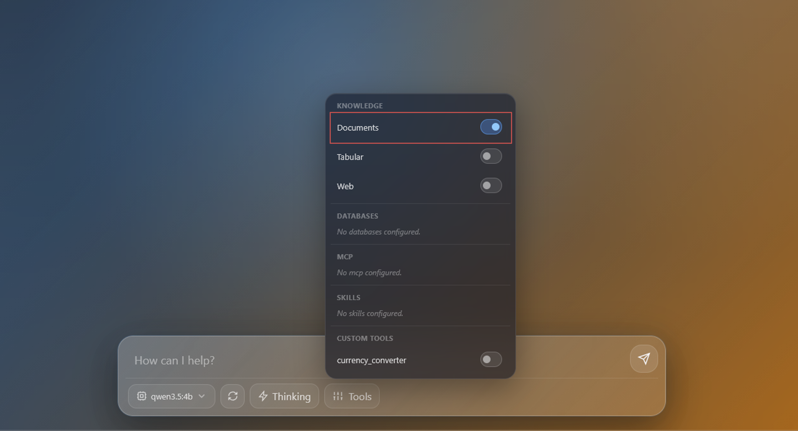

Guia de utilização · Windows 11 · LLM local
PrivateGPT
Prepare os modelos, carregue os ficheiros e converse com os seus documentos.
O que é
O PrivateGPT permite carregar documentos e conversar sobre o seu conteúdo. Neste guia, o modelo de conversa e os embeddings funcionam no computador através do Ollama.
Preparar o computador
Precisa de Docker Desktop e Ollama abertos. Se já os preparou nos guias anteriores, avance para o download dos embeddings.
Se ainda não tem Docker Desktop, siga o README. Para instalar Ollama:
winget install --id Ollama.Ollama -e --source wingetResultado: Ollama instalado. Depois feche e reabra o PowerShell e abra Ollama no menu Iniciar.
Precisa também de um modelo de conversa. Se ainda não descarregou o Qwen usado nos outros guias, execute:
ollama pull qwen3.5:4bResultado: modelo de conversa descarregado. Se já o tem, não precisa de repetir.
Descarregar e verificar os embeddings
Descarregue o modelo que prepara os documentos para pesquisa:
ollama pull mxbai-embed-largeResultado: modelo de embeddings descarregado. Aguarde pela indicação de sucesso.
Confirme os modelos instalados:
ollama listResultado: a lista deve incluir mxbai-embed-large (pode aparecer com :latest) e o modelo de conversa, por exemplo qwen3.5:4b.
mxbai-embed-large serve para pesquisar os documentos; o Qwen gera as respostas.
Iniciar o PrivateGPT
No Explorador, abra a pasta onde quer guardar os dados do PrivateGPT. Botão direito numa zona vazia → Abrir no Terminal → PowerShell.
Com Docker Desktop e Ollama abertos, copie o bloco completo:
docker run --name privategpt `
-p 8080:8080 `
-e OPENAI_API_BASE=http://host.docker.internal:11434/v1 `
-e OPENAI_EMBEDDING_API_BASE=http://host.docker.internal:11434/v1 `
-v "${PWD}/local_data:/home/worker/app/local_data" `
zylonai/private-gpt:latestResultado: imagem descarregada e PrivateGPT iniciado. A pasta local_data, dentro da pasta escolhida, guarda os dados.
Aguarde pelo arranque e deixe esta janela aberta. Este comando mostra as mensagens do serviço e não devolve imediatamente a linha para escrever.
Os dois endereços apontam para Ollama no seu computador; os nomes das variáveis OPENAI_… referem-se ao formato de ligação compatível.
Abrir e concluir a configuração
Depois do arranque, abra Abrir PrivateGPT ↗
Endereço do chat: http://localhost:8080/ui.
Manter os valores predefinidos
No ecrã inicial, mantenha PrivateGPT Base URL em
http://localhost:8080, a autenticação predefinida e Collection ID empgpt_collection, como na imagem. Clique em Save and check.
Imagem 14 — Configuração inicial da ligação e da coleção. Clique na imagem para ampliar. Terminar a configuração
Quando aparecer All good, mantenha a personalização predefinida e clique em Finish setup.

Imagem 15 — Ligação confirmada e botão Finish setup. Clique na imagem para ampliar.
Criar a coleção e carregar ficheiros
Dar um nome à coleção
Abra as definições e, em Collection ID, indique o nome da coleção que vai usar para os seus documentos. Guarde a alteração antes de carregar ficheiros e mantenha essa coleção selecionada para os consultar.
Carregar os documentos
Na barra lateral, clique em Context. Escolha Documents, clique em Upload e selecione os ficheiros que pretende consultar.

Imagem 16 — Context → Documents e botão Upload. Clique na imagem para ampliar. Aguardar pelo processamento
Aguarde até os documentos aparecerem na lista, como no exemplo. Se necessário, use Refresh para atualizar a lista.

Imagem 17 — Exemplo de documentos carregados na coleção. Clique na imagem para ampliar.
Ativar os documentos e conversar
Abra New Chat e selecione o modelo de conversa local, por exemplo qwen3.5:4b. Clique em Tools e ative Documents, como na imagem. Para este percurso, deixe Web desativado.

O chat está pronto para consultar a coleção. Experimente:
Resume os pontos principais dos documentos e indica os excertos que sustentam a resposta.
Aguarde e confira a resposta nos documentos originais.
Parar e voltar a iniciar
Para parar, abra outra janela PowerShell:
docker stop privategptResultado: contentor parado, sem apagar os dados. Pode depois fechar a janela do arranque inicial.
Noutro dia, abra Docker Desktop e Ollama e execute:
docker start privategptResultado: o mesmo contentor volta a iniciar. Aguarde e abra http://localhost:8080/ui.
Use a mesma coleção para voltar aos documentos. Não repita o comando de instalação nem apague a pasta local_data.
Problemas frequentes
A página ainda não abre
Confirme que Docker Desktop e Ollama estão abertos, aguarde pelo arranque e use o endereço completo http://localhost:8080/ui.
O nome «privategpt» já está em uso
O contentor já existe. Use o comando de arranque do passo anterior.
A porta 8080 está ocupada
Feche a aplicação que estiver a usar essa porta, se a reconhecer. O manual usa a porta 18080.
O modelo não aparece ou há erro de embeddings
Confirme que Ollama está aberto e verifique os modelos com o comando do passo 3. São necessários tanto o modelo de embeddings como o modelo de conversa.
O chat não usa os documentos
Confirme a coleção selecionada, o fim do processamento e a opção Documents ativa.
Consultar as mensagens de erro
docker logs --tail 50 privategptResultado: últimas mensagens do contentor para identificar o erro.
Percurso ilustrado com as imagens fornecidas para este projeto. Referências: PrivateGPT — arranque e interface, imagem Docker, mxbai-embed-large e ligação ao servidor local Ollama.
← Voltar aos guias